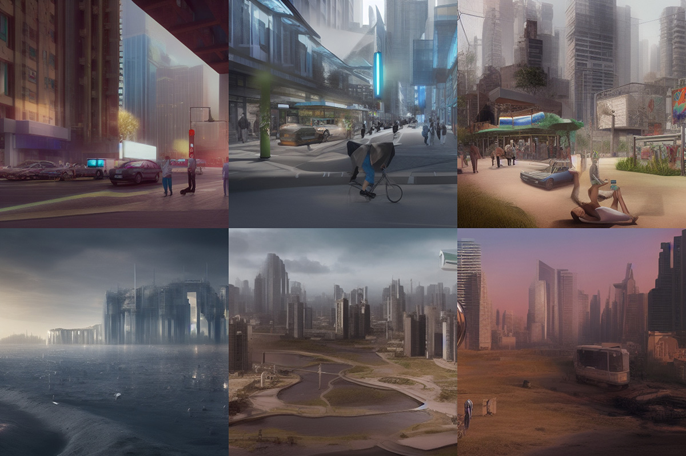
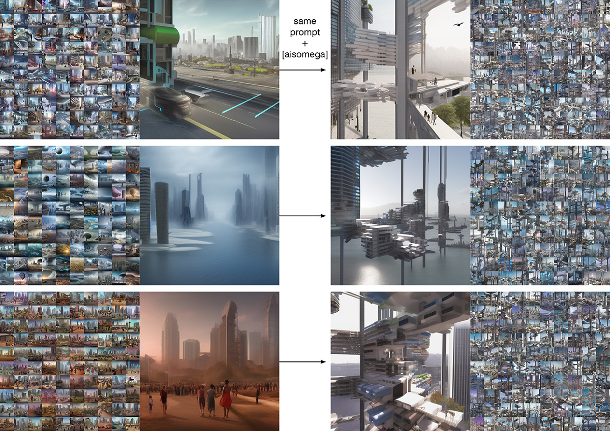
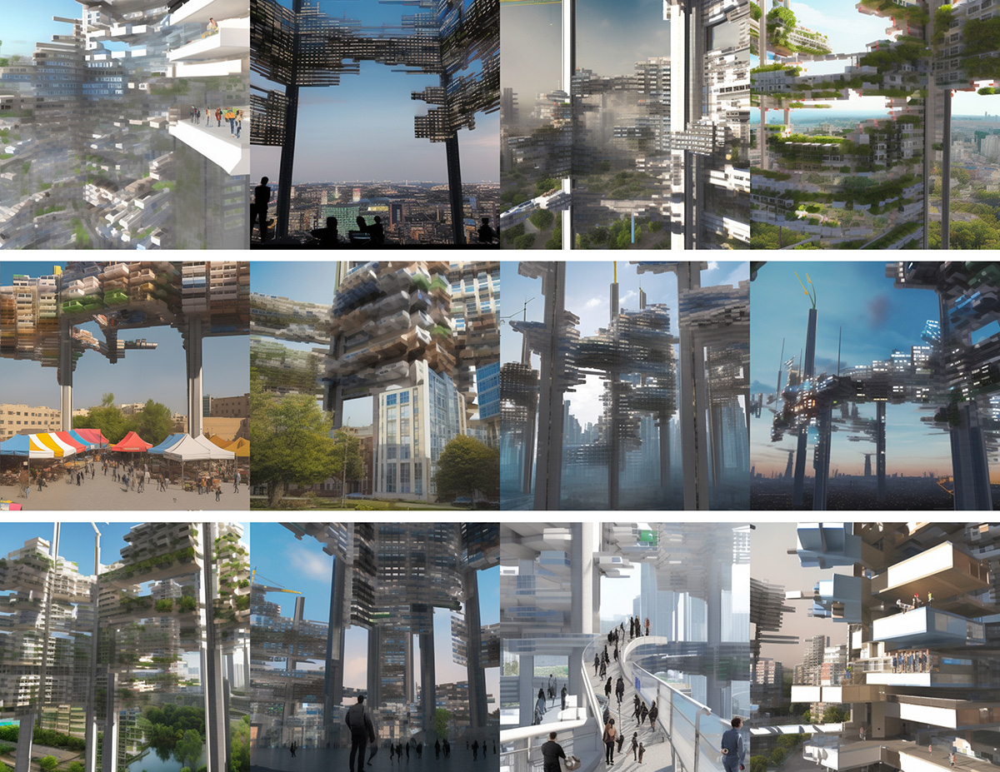

ARCHITECTURAL INCEPTION: Dose AI Dream of Lost Futures?
The emerging technologies of AI art generation visualize ideas through text-image synthesis within enormous datasets of digital media, which offers alternative approaches to investigate the media-infused concepts of the future in contemporary imagination. Among the collective knowledge of visual cultures that shape AI creativity, architecture is particularly relevant for framing future conditions of various concepts in an age of global urbanization. The architectural paradigms of AI-generated futures inform not only the cultural tendencies toward socio-technological progress but also the cultural risks of future narratives across the AI-augmented creative practice. Accordingly, through active human intervention, can AI facilitate thought experiments on alternative futures of contemporary imagination?
My bidirectional prompt-image generation exercise in Stable Diffusion,
which results in 300 pairs of loosely-framed concepts to represent 'future' by AI's collective knowledge.
Taking the open-source AI model Stable Diffusion as an idea synthesis device of contemporary culture, this project conducts a series of text-image generation exercises on future concepts to uncover the cultural stagnation of architectural imagination associated with cultural theorist Mark Fisher’s argument on the slow cancellation of the future.
Architectural paradigms that represent the haunted futures of global urbanization from my Stable Diffusion exercise. The formal nostalgia of haunted futures found in the pervasive 'cyberpunk' (captured by image-to-prompt) aesthetics from my stable diffusion exercise.
Following Fisher’s melancholic call for hauntological cultures to retrieve the radical impulses of lost futures, the project initiates an open-ended experiment of architectural inception, as referring to the dream implementation from Christopher Nolan's 2010 movie Inception, to implement the lost futures of megastructure movements into Stable Diffusion’s collective knowledge.
Pre-inception 1: Examine Stable Diffusion's capacity to understand 'megastructure' within its collective memory through concept description and relevant project names in prompt-to-image generation.Pre-inception 2: Re-examine through image-to-prompt generation with historical images of megastructure projects (drawing and models).
 The most architecturally readable results of the examination happen on Arata Isozaki's 1962 project City in the Air,
The most architecturally readable results of the examination happen on Arata Isozaki's 1962 project City in the Air, which is deemed suitable as a conceptual reference to reimagine megastructure in Stable Diffusion.
 Inception: 3D modeling of megastructure concept to produce 90 renderings as a training set for DreamBooth Fine-tunning.
Inception: 3D modeling of megastructure concept to produce 90 renderings as a training set for DreamBooth Fine-tunning.
 Inception working: The trained model enables Stable Diffusion to reimagine megastructure as an integral part of various concepts.
Inception working: The trained model enables Stable Diffusion to reimagine megastructure as an integral part of various concepts.
As an intermediate result of AI model fine-tuning with Google’s DreamBooth technique, my personalized Stable Diffusion model generates alternative images of contemporary and future scenarios haunted by megastructure concepts with technical limitations. In addition to bridging the latest AI technologies with architectural discourse, the project demonstrates the cultural capacity of architecture as a visual carrier of thought instruments to break through the cultural stagnation of contemporary imagination for alternative futures.
 Intermediate results of Stable Diffusion training compared to my initial exercise using the same prompt + megastructure inception. Experimentation to be continued with more comprehensive training sets and upcoming AI tools...